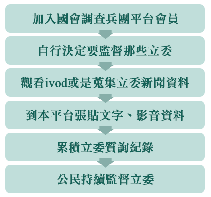

【兵團計畫說明】
人在做，天在看。立委在做，人民在看！
你知道你選區的立委是誰嗎？
你知道你選區的立委每天在立法院說過和做過的事嗎？
你知道你選區立委每天決定了多少重要的法案嗎？
我們都知道現在流浪狗的問題很嚴重，但你知道流浪立委其實造成更多社會政治的問題嗎？每四年，你我選擇了那些看起來最可愛的立委，投下神聖的一票，讓他們進入國會。然後大家就什麼都不管了，放任他們在國會裡胡言亂語、打架鬧事。不管哪個立委積極問政，也不管哪個立委最常翹課。這樣我們有盡到當主人的責任嗎？
你不用擔心需要多專業的技能，所需要的只是一份真誠改變社會的熱情！我們將關注立委「只有黨意、沒有民意」的作為！我們將關注立委「選前選後言行不一」的態度！我們也關注立委「認真質詢、用心立法」的好表現！我們一起監看立委IVOD影片，紀錄重要的片段，定期發表、分享到網路上。讓這些立委們知道「人在做，天在看。立委在做，人民在看！」
我們希望降低門檻，擴大參與，讓監督立委，變成每一個人隨時隨地都可以做的事。
我們希望集合眾人的智慧，讓大家監督立委的成果，可以更容易的彙整、更容易的傳播。
我們希望集合立委的表現，建立立委的質詢言行履歷，讓下一次選舉的時候，能夠讓人民有更清楚的評估資料可以做參考。
我們有一個簡單的夢想：「每天5分鐘，改變台灣社會！」
請加入我們，如果這個國家帶來黑暗，就由我們公民自己帶來光明！